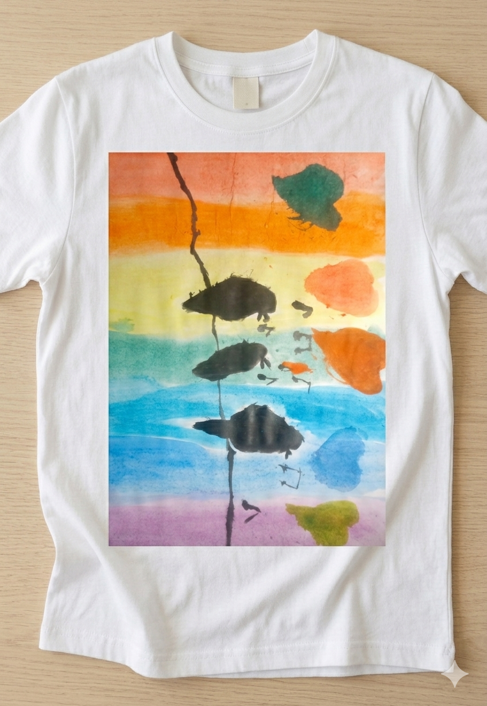
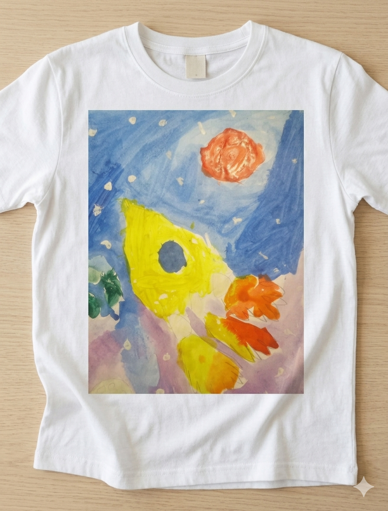
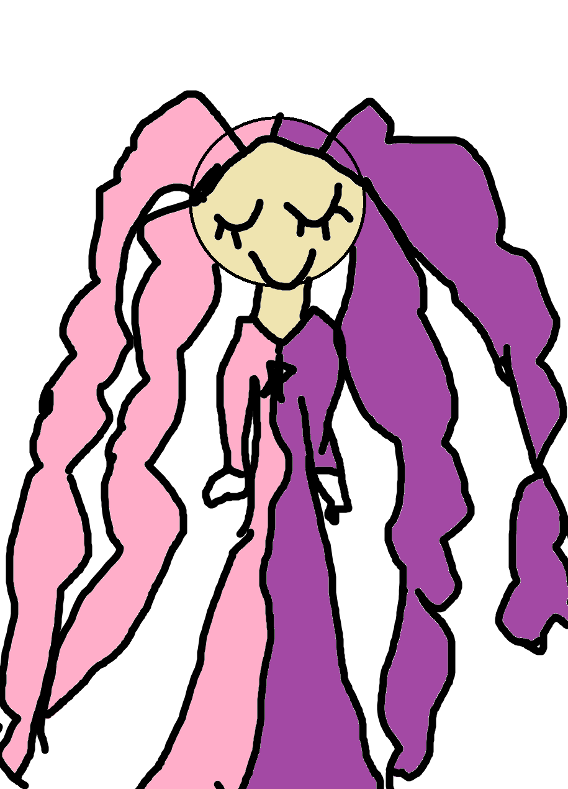
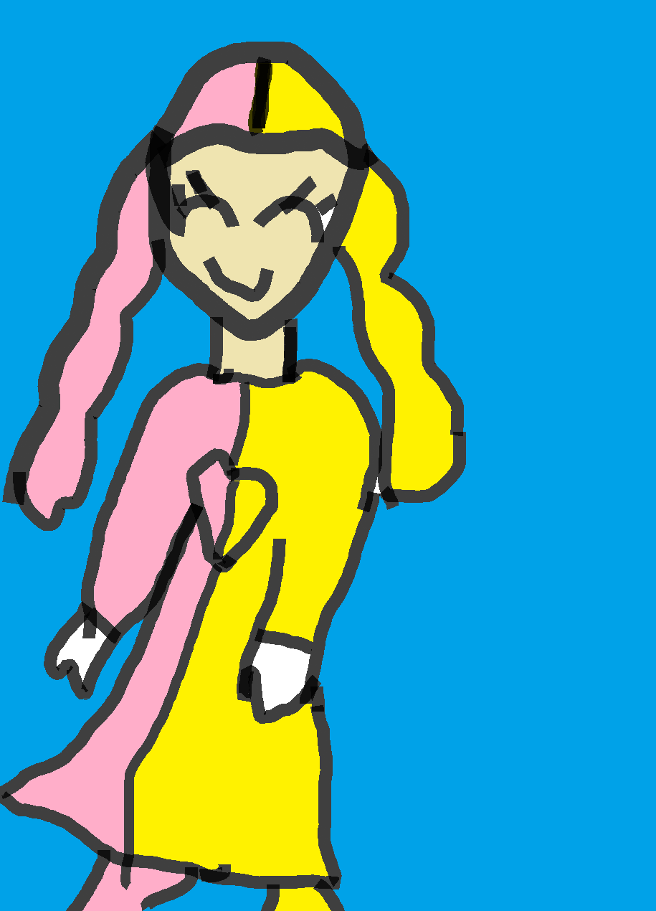

10 Заповедей Внутренней Архитектуры
Алгоритмы мышления и настройки фокуса от Анны
Карта — это не территория
Оценка за контрольную или чужое мнение — это лишь чье-то представление, а не твоя реальная ценность и потенциал.
Ошибок нет, есть только опыт
Испорченный лист или неудачный штрих — это не провал, а обратная связь. Каждая «ошибка» учит делать точнее.
Смысл общения — в реакции
Важно не только то, что ты сказала, но и как тебя поняли. Учись доносить свои мысли так, чтобы тебя слышали.
У тебя уже есть все ресурсы
Вся необходимая уверенность, фокус и вдохновение уже внутри. Нужно лишь научиться правильно их включать.
Якорение на успех
Создавай свои «триггеры состояния»: любимый трек, запах или жест, которые мгновенно включают режим концентрации.
Управляй Внутренним Критиком
Сделай голос сомневающегося «внутреннего критика» смешным или мультяшным — и он потеряет над тобой силу.
Правило микро-шагов
Большая картина или сложный проект строятся по одному штриху. Разбивай любую гигантскую задачу на простые шаги.
Гибкость — это сила
Тот, кто умеет менять подход и адаптироваться, всегда получает лучший результат — и в арте, и в учебе.
Состояние определяет результат
Не садись за работу в уставшем состоянии. Сначала приведи в порядок тело и дыхание — потом твори.
Ты — Главный Архитектор
Твой день, твой стиль и твое будущее создаются твоим выбором прямо сейчас. Проектируй их осознанно.
Полезный TikTok
Туториалы, процесс создания рисунков и применение заповедей на практике.
Смотреть TikTok @arhanticГалерея Иллюстраций
Творческое портфолио Анны



